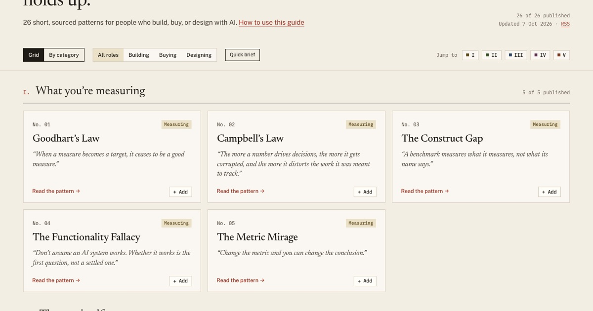
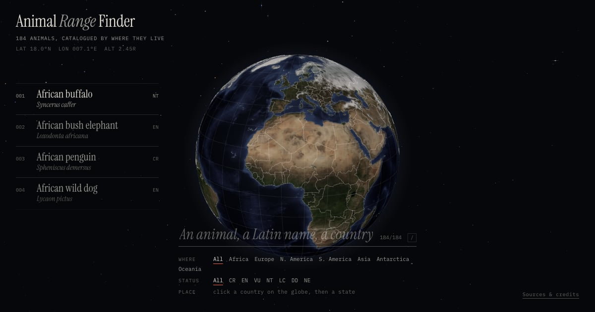

Side projects
Products I designed and built on my own, from the first idea to the live site. Building them myself keeps me close to the craft and lets me try ideas I can’t try at work.
-

Laws of AI Evaluation A field guide for deciding whether an AI system actually holds up, written for people who build, buy, or design with AI. It turns what I learned setting the AI evaluation bar at Amazon into patterns and tools anyone can use. (opens in new tab) -

Animal Range Finder Search for an animal by name, Latin name, or country and see where it lives on a 3D globe. Ranges come from real occurrence records, and every description, photo, and map is openly licensed and credited. (opens in new tab)